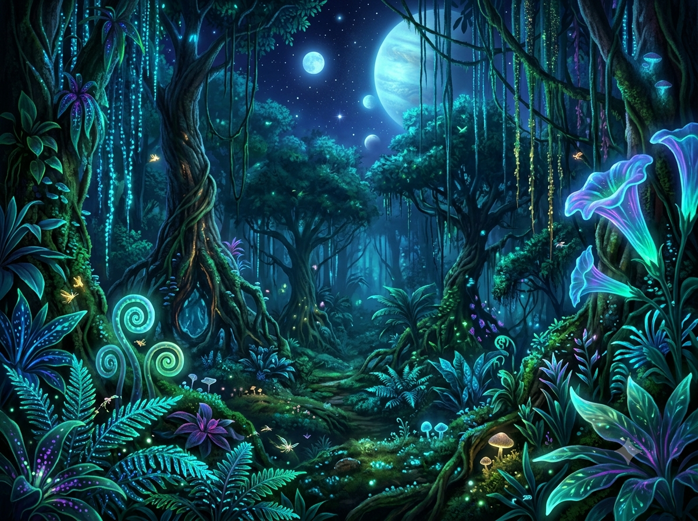
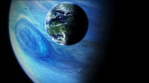
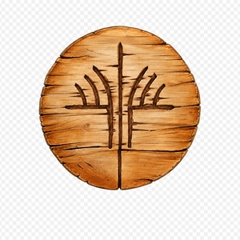
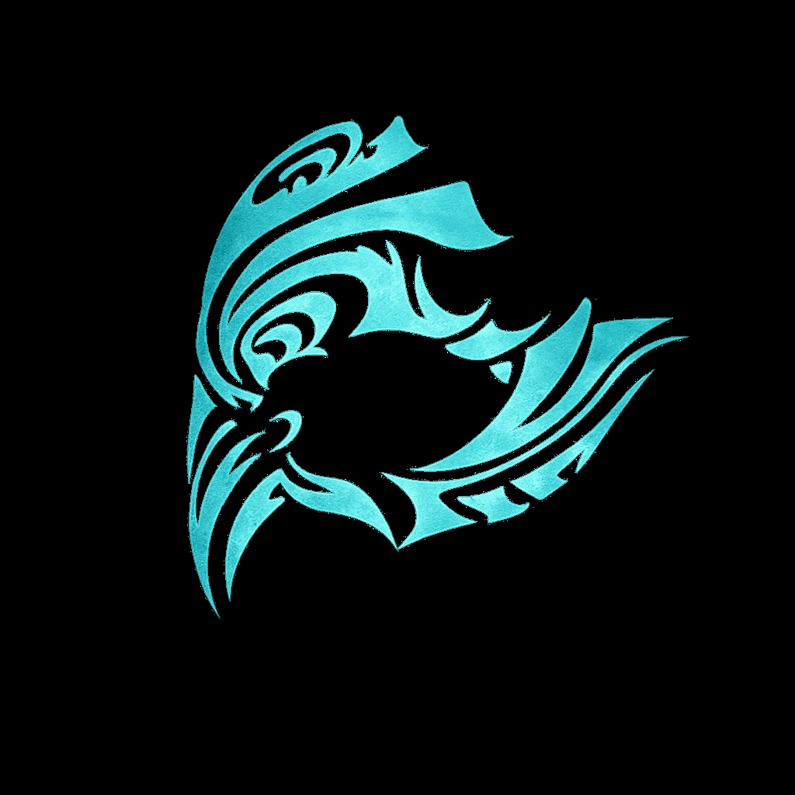
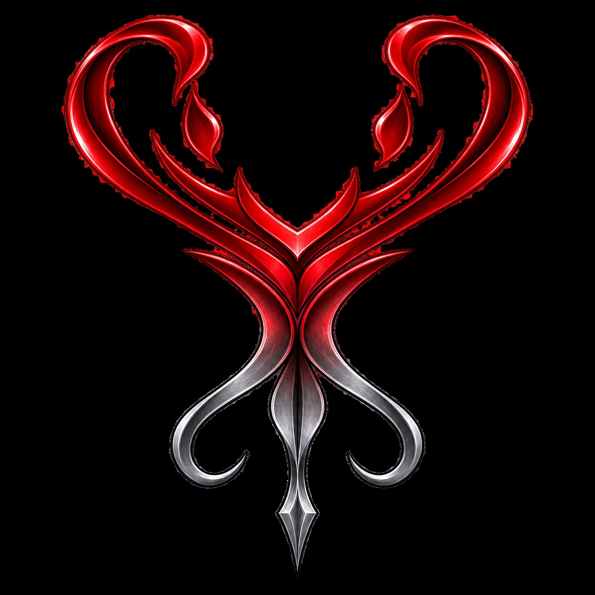

Vamos começar
Por: Arthur Inacio
aqui irei complartilha curiosidades sobre o fantanstico, incrivel, e diverso de Pandora, explorando seus nativos, os Na'vi e suas culturas
vou compartilhar conhecimentos sobre a trilogia de filmes avatar, focado na cultura dos na'vi

Por: Arthur Inacio
aqui irei complartilha curiosidades sobre o fantanstico, incrivel, e diverso de Pandora, explorando seus nativos, os Na'vi e suas culturas

Por: Arthur Inacio
Pandora é a lua habitada do gigante gasoso Polifemo no sistema estelar Alfa Centauri, famosa por sua
flora bioluminecente es os nativos, os Na'vi, alem de seu estoque de minerios como o minerio
ficticio unobitaneo, uma terra sagrada para os Na'vi
A lua contem varios ambientes unicos, como montanhas, planices, manguesais, oceanos imensos,
florestas densas, onde cada local é sagrado, para os Na'vi
Por isso, Pandora é um dos palcos do povo mais incrivel, culturalmente falando.
fonte: site oficial pandorapedia

Por: Arthur Inacio
Os Na'vi são uma raça de seres alienígenas humanoides fictícios que habitam a lua Pandora. Eles são conhecidos pela pele azul, altura de até três metros, caudas longas e forte conexão espiritual com a natureza do planeta. espalhados por pandora, cada na"vi tem sua forma de viver e se adaptar a Pandora
fonte: site oficial pandorapedia
Por: Arthur Inacio
Os Na'vi são divididos em varios clãs que possuem seus moodos de viver, se adaptando paara para seus
ambientes, como os omatikaya que vivem em florestas tropicais, ou os metkayina que vivem em meio o
oceano e manguesais
a seguir os clãns:
Os omatikaya
Os metkayina
Os mangkwan
Os olangi
Os zeswa
Os kame'tire
Os aranahe
Os sarentu
Os tlalim
Os talkami
Os tayrangi
cada um com sua cultura, modos de viver unicos, mas neste blog falaresmo de 3 clãs,eles são
"omatikaya", "metkayina" e os "mangkwan"
fonte: site oficial pandorapedia

Por: Arthur Inacio
Os Omatikaya são um povo amigável e profundamente espiritual, conhecido como o “Clã da Flauta Azul”, além de serem guerreiros orgulhosos e protetores de seu lar na floresta tropical. Eles existem há milhares de anos e foram o primeiro clã Na’vi a entrar em contato com os humanos. Valorizando a comunidade acima de quase tudo, os Omatikaya celebram todos os momentos marcantes da vida de um indivíduo com reuniões que incluem música, comida e dança.
fonte: site oficial pandorapedia

Por: Arthur Inacio
Os Metkayina são um clã Na’vi que vive entre os atóis distantes de Pandora. Cada aspecto do estilo de vida dos Metkayina está ligado aos ritmos das águas. Suas moradias — também conhecidas como *maruis* — são construídas em árvores gigantes semelhantes a mangues, ao longo da costa, e protegidas da força das ondas por enormes barreiras de recifes. Os Metkayina mantêm relações pacíficas com os clãs vizinhos e possuem um vínculo espiritual único de parentesco interespécie com os *tulkun*. Embora estejam distantes demais para ajudar os Omatikaya na batalha contra o Povo do Céu, os Metkayina sabem que, com o retorno da RDA, sua paz pode estar com os dias contados.
fonte: site oficial pandorapedia

Por: Arthur Inacio
Os clãs Na’vi de Pandora são cultural e biologicamente diversos, mas nenhum é mais odiado ou temido do que o clã Mangkwan. Após uma grande reviravolta, os Mangkwan — ou clã das Cinzas — abandonaram os princípios Na’vi de equilíbrio e interconexão. Em vez disso, rebelam-se contra Eywa e seus seguidores, realizando incursões e saques a outros clãs para sobreviver às consequências do trauma que sofreram.
fonte: site oficial pandorapedia